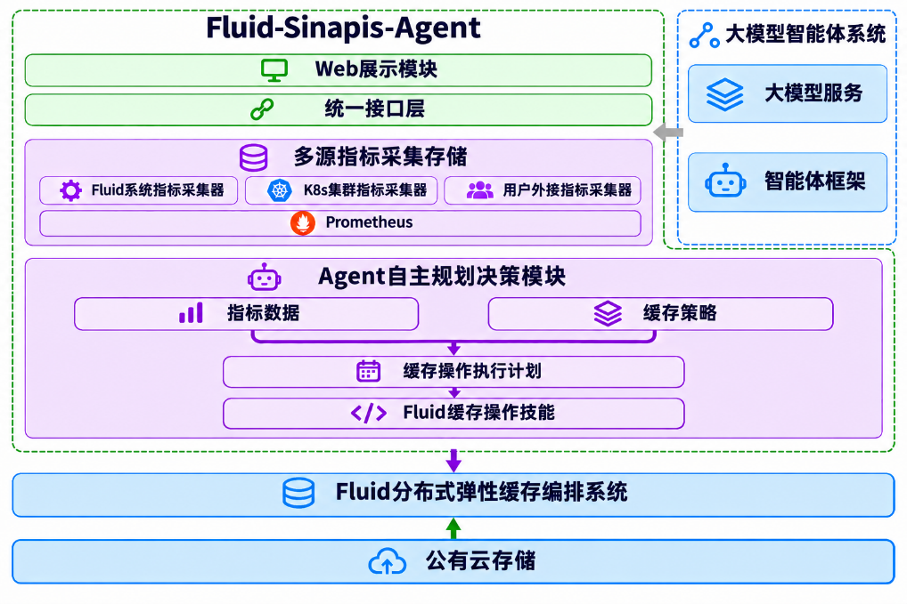
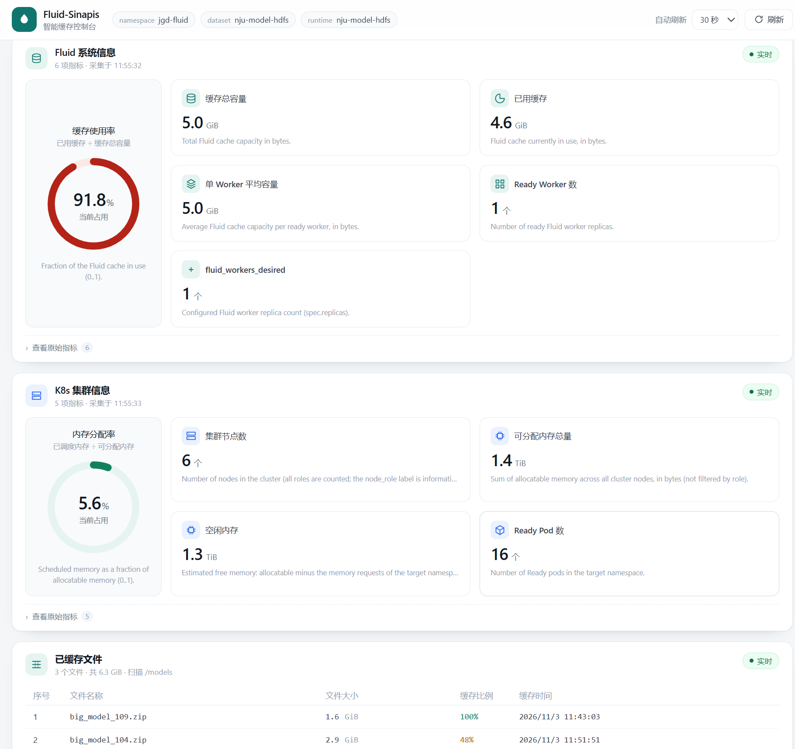
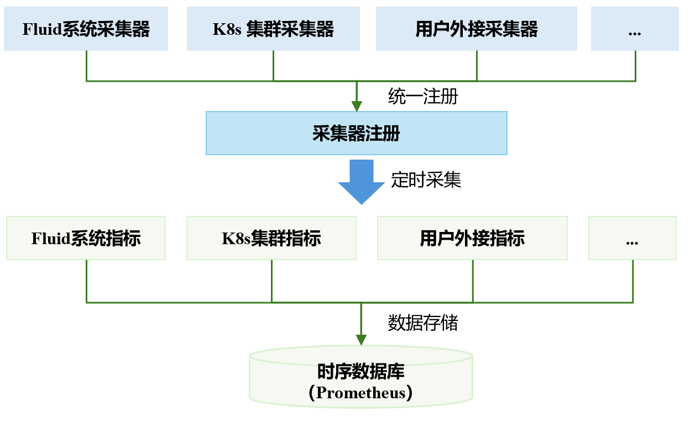
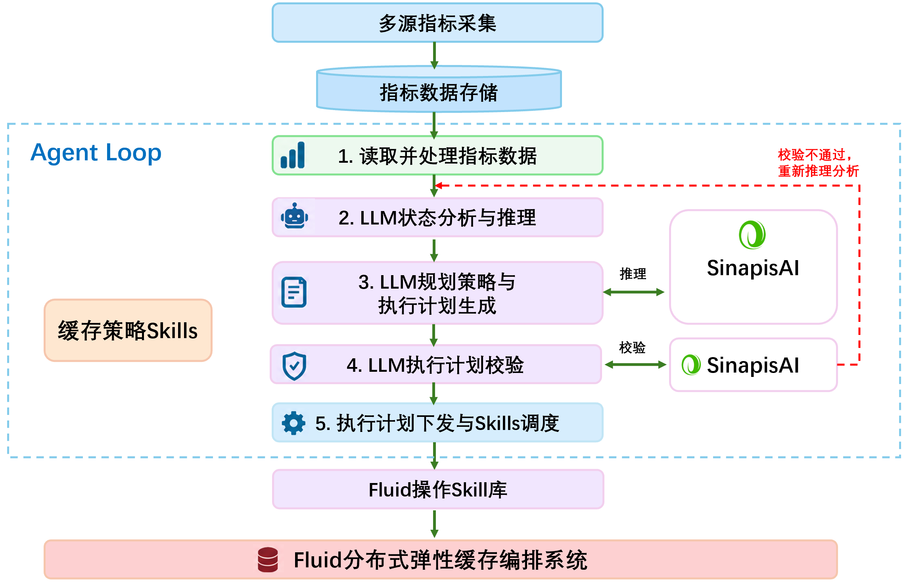
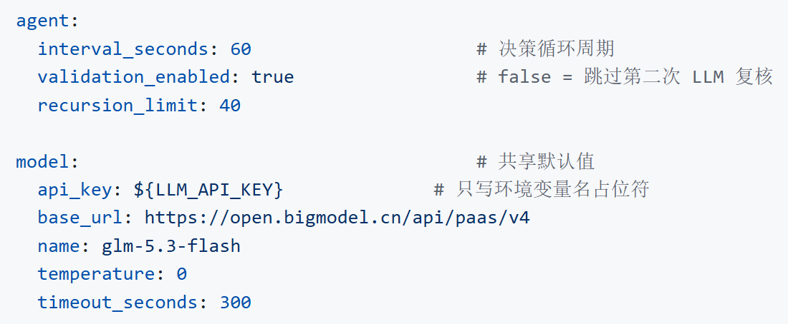
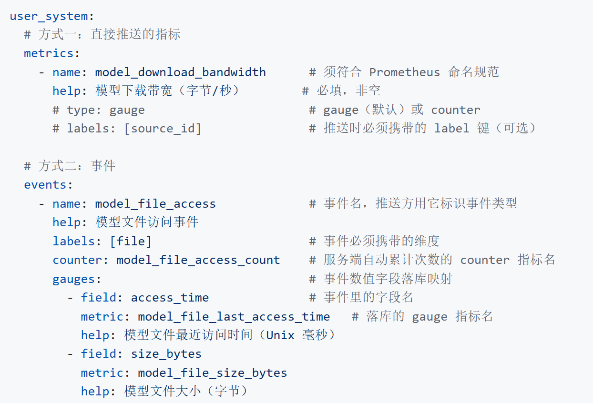
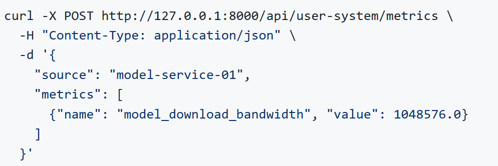
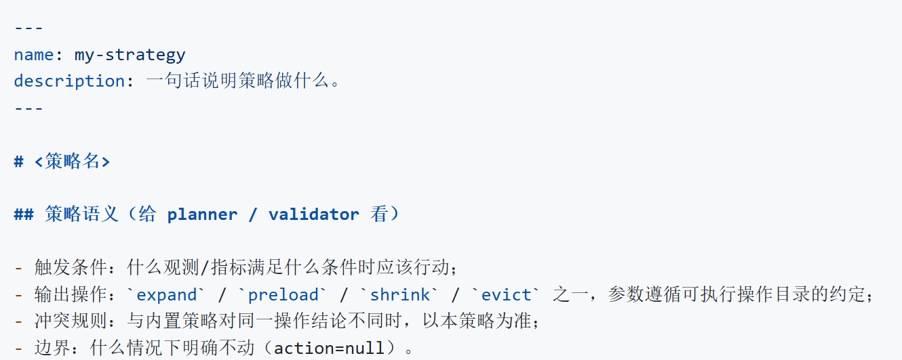
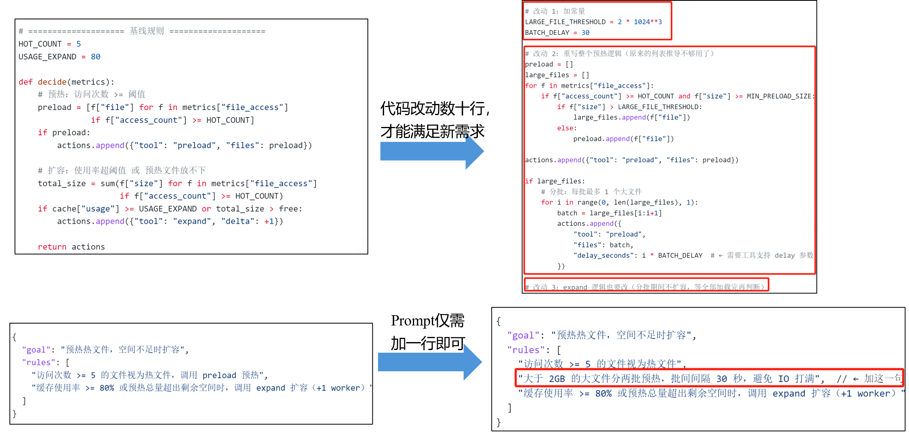

一、前言
Fluid 是一款云原生分布式弹性缓存加速框架，通过将远端存储中的数据缓存至 Kubernetes 集群本地，并对缓存资源进行统一编排与管理，提升应用的数据访问性能。随着 Fluid 在云原生场景广泛应用，越来越多用户提出了以下需求：
（1）多源指标接入与感知。外部业务系统的数据流量指标、Fluid状态指标（缓存容量使用率、缓存文件副本数）和一些其他指标缺乏统一的聚合与抽象，难以使用大模型和智能体准确地判断当前缓存系统是否处于健康状态，更无法将业务侧的真实流量压力与Fluid的缓存效能指标关联起来，从而综合考虑进行后续操作。
（2）智能化缓存管理决策。当前的扩缩容等决策高度依赖运维人员的个人经验操作或者规则式扩缩容，而非通过大模型智能体来判断"在什么条件下执行什么动作"。例如，综合各项目内外部指标，是应该增加缓存容量，还是优先触发文件预热？当流量高峰来临，是按固定步长扩容？这些决策逻辑功能，难以适配不同业务场景的差异化需求。
（3）灵活便捷Fluid操作。实际中指标参数多、环境复杂、Fluid 手工操作速度远跟不上业务需求，缺乏大模型智能体框架来实时监测与动态操作，往往扩容完成前已经发生缓存击穿；而在流量低谷期，又缺乏自动缩容机制，导致计算与存储资源长期闲置，无法实现与业务节奏的动态匹配。另外，副本增加操作由用户进行也很复杂。
Fluid开源社区需要一套拥有Agentic 特征、面向 Fluid 的弹性缓存管理系统，具备自主感知、智能决策、技能执行等能力的综合管理系统。
二、什么是Fluid-Sinapis
Fluid-Sinapis是一套基于大模型智能体框架构建的Fluid弹性缓存管理系统，可以解决前文提出的Fluid不足之处，其核心目标是将Fluid缓存管理从传统的“手工/规则式管理”升级为具备Agentic（智能体自治）特征 的“自主感知‑智能决策‑自动执行”系统，实现缓存资源与业务节奏的动态精准匹配。

图2-1 Fluid-Sinapis系统架构图
解决的核心问题：本项目解决的是Fluid缓存“能弹性，但难以判断什么时候弹、该不该弹、该怎么弹”的问题，形成的闭环是六步：多源指标定时采集→Sinapis大模型智能分析→生成缓存执行方案→ Sinapis大模型复核方案→调用Fluid技能执行→记录执行结果。
项目职责边界：它不替代 Fluid 自身的缓存引擎（Alluxio、JuiceFS 等）和数据编排能力，也不替代Prometheus采集与Kubernetes调度这些基础设施，也不处理底层存储故障、网络分区这类系统性故障，只专注于缓存管理调度。

图2-2 Fluid-Sinapis系统web页面
三、核心功能
本项目核心部分包括三部分：
• 多源异构指标采集存储：以可插拔的方式从Fluid缓存状态、Kubernetes集群和业务系统自身三个方向收集数据，统一落到时序库中。
• Agent智能缓存决策层：内置多种Fluid缓存策略，每轮按"读取指标、模型推理生成执行方案、独立复核、调用执行"的固定流程推进，任何一步不成功就停止后续动作。
• Fluid Skills技能库：目前包含缓存容量扩容、缓存文件预热、缓存文件移除、缓存容量缩容四种内置策略和对应的Fluid Skill。
3.1、多源异构指标采集存储
负责汇聚 Fluid系统指标、K8s 集群指标及用户外接指标，将这些指标统一结构化处理后使用Prometheus存储，为后续Agent智能决策提供数据支撑。

图3-1 多源异构指标采集示意图
采集器是可插拔的类，新增一类数据源就是注册一个采集类，不需要改动核心逻辑。当前内置两类主动采集：
表3-1 多源异构指标内容
所有指标统一封装后写入Prometheus，再由Agent读取，形成"写通道 + 读通道"分离的结构：采集器只写，Agent只读，中间靠Prometheus解耦。
3.2、Agent自主规划决策
负责缓存策略管理与自主规划决策，通过接入外部大模型（如DeepSeek、GLM等，支持用户自主配置），结合系统实时监控指标、内置默认缓存策略类 Skill以及逐步沉淀的自定义策略类Skill，实现Agent的智能决策。在Agent Loop运行过程中，大模型首先获取系统监控指标，分析并判断当前缓存系统的运行状态，再根据推理结果，按需选择并加载相应的策略类Skill，利用其中定义的策略规则与操作指导进一步完成缓存优化决策和操作序列规划，最终生成 Fluid执行计划。

图3-2 Agent自主规划决策流程图
用户可以自由配置各阶段使用的大模型，我们建议使用SinapisAI，因为其可以根据用户需求，模型能力等自动匹配，选择合适的大模型。

图3-3 系统大模型和智能体配置
3.3、Fluid系统操作Skills
本项目的Fluid Skill是基于标准Skill规范实现的，当前版本提供了四种Fluid操作技能，分别是缓存文件预加载、缓存文件移除、缓存容量扩容、缓存容量缩容。当自主规划决策层生成执行计划并复核通过后，会调用本层相应的执行类Skill，并调用底层封装的Fluid操作方法，完成具体的缓存操作，实现对Fluid分布式弹性缓存系统的动态调整。以下是缓存容量扩容的skill示例。
• SKILL.md（名称、描述、适用场景，LLM用来判断“什么时候该用”）
name: expand_cache
description: |
扩容 Fluid 缓存系统的存储容量。当缓存容量使用率过高（如 >85%）或
预测即将出现容量瓶颈时调用。支持按比例或绝对值扩容。
注意：单次应为固定容量，例如：40GB。
• scripts（调 Fluid接口，真正执行操作）
def expand_skill( **kwargs):
# 校验 1：单次扩容容量
# 校验 2：总容量上限
# 执行FluidAPI 调用
# 校验是否扩容成功
3.4、用户外接指标与自定义策略
（1）用户外接指标
支持用户把业务系统的自定义指标数据接入到本系统中，在config.yml中配置user_system字段，配置为热加载，修改后无需重启服务，服务端会自动检测并加载这些字段。

config.yml中配置完成后，通过HTTP接口把对应的指标数据发送到本系统中。

（2）自定义缓存策略
支持用户编写自定义缓存策略技能，注入用户自己的缓存决策逻辑，自定义策略模板在 server/agent/skills/user_skills/下，由框架每轮自动扫描加载、免重启。格式要遵循skill规范： name + description + Markdown 正文：

两者可以单独使用，也可以组合使用，用户自定义指标接入后→自定义策略脚本读取这些指标做出判定→ Agent规划与复核环节遵循该判定。
自定义策略与内置策略对同一操作（如 expand）给出不同结论时，以自定义策略为准。
四、效果对比
本项目基于LLM Agent的方式实现Fluid缓存的智能化管理，与传统基于编码策略和硬配置策略相比，拥有以下优势：
（1）多指标协同下的决策泛化能力更好
例如有一个基于编码的缓存策略：如果访问次数大于100，就将文件缓存。
这种策略在一些简单场景下，可以做到和Agent相同的执行结果，但在一些复杂场景下，例如缓存容量还剩10GB，此时有3个热点文件都需要缓存，分别为file1（7GB）、file2（5GB）、file3（4GB），3个文件无法同时放入 缓存中，此时编码策略就无法准确判断优先将哪几个文件放入缓存，而Agent可以综合文件大小指标来选择收益最大的文件file2（5GB）、file3（4GB）放入缓存。
（2）超参数设定与边界适应能力更强
例如有一个基于编码的扩容：如果已用缓存超过80%，就扩容1个worker。
这种策略当缓存容量已经用了79%时，又来了一个热文件，大小超过剩余缓存容量，但是由于没有超过设定的80%阈值，因此编码策略不会执行扩容，导致该热文件一直没有足够容量缓存。而Agent策略则会判断已经接近阈值且该热文件需要缓存，因此会先执行扩容再将该文件缓存。
（3）新策略的开发与维护能力要求更低
在新增一个策略需求时，基于编码的形式开发一个新策略动辄增加几十行源代码，而基于Agent的策略只需要增加数行描述即可实现，对开发人员的技术要求更低，且维护成本也更低。

五、社区支持
作为Fluid-Sinapis开源项目组件的发起者，南芥智能很荣幸能与Fluid开源社区合作伙伴一起推出fluid-sinapis，同时也衷心感谢 Fluid 开源社区对本项目给予的支持与帮助。
--刘建东，南芥智能，Fluid-Sinapis核心贡献者
“Fluid-Sinapis汇集缓存、集群和业务指标，通过大模型智能体分析状态、生成计划，再调用技能执行缓存操作。我们希望用户基于多样化大模型智能体能力，更方便地实现系统优化目标和约束，减少策略开发和系统管理负担。”
--车漾，阿里云，Fluid开源社区co-founder
“Fluid-Sinapis 的价值，在于把缓存管理从人工操作变成了Agent智能管理，过去用户从过去手工写YAML定预热、定副本，现在只需要收集相关指标，剩下的交给智能体去感知、规划、执行。特别想感谢南芥开源技术团队把这个想法做成了系统组件，并共享给了Fluid开源社区，这是开源协作的优秀案例。”
六、下一步规划
当前0.1版本是一个能跑通、能观测、能扩展的起点，接下来的方向大致分三层。
（1）更早的判断：下一步希望引入时序预测，在已知调度和历史的访问曲线之间做匹配，把"扩容"从救火提前到准备。这一层不需要改变现有架构，只需要新增一类观测源和一类策略。
（2）更广的适配：缓存操作技能目前只适配了Alluxio Runtime，将来会继续适配JuiceFS、ThinRuntime 等运行时，根据参数语义不同，需要在技能层做抽象，让"扩容""预热""清理"在不同引擎下有统一的语义。
（3）更细的观测：现在能拿到的是Fluid缓存容量与文件访问热度，拿不到回源延迟、单文件收益。补上这些之后，缓存收益才有可能被量化，决策也才能从"看起来合理"走向"算得出来"。
七、参与贡献
项目采用 Apache 2.0 协议开源，遵循 CNCF 行为准则。如果你也在用 Fluid 管缓存，欢迎试用、提 issue、提 PR。
• 项目仓库：https://github.com/fluid-cloudnative/fluid-sinapis
• 快速开始：docs/zh/quick-start.md
• Slack：https://cncf-slack.netlify.app/